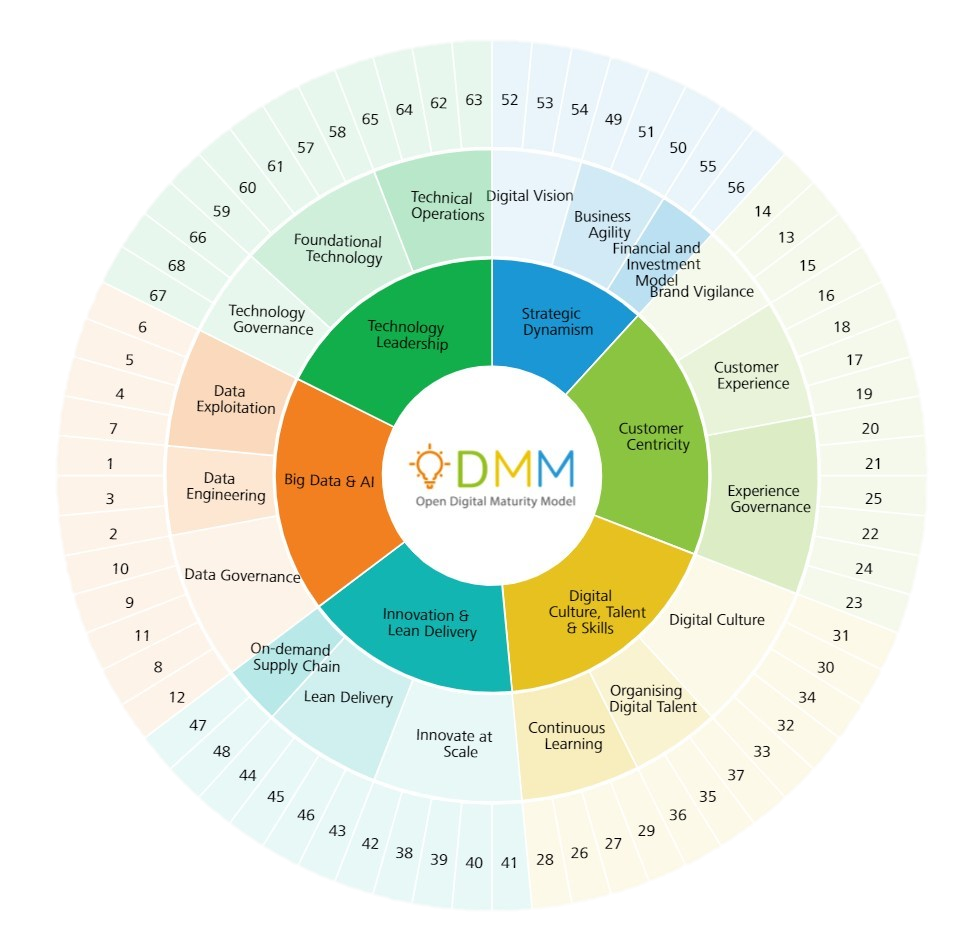

<div class="main-content">
    <div class="container-fluid">
        <div class="row">

            <div class="col-md-12 col-md-12 col-sm-12">
                <div class="card">
                    <div class="card-header card-header-primary">
                        <div class="text-center">
                            <h3 class="card-title">Modelo de madurez digital abierto</h3>
                            <p class="card-category">ODMM</p>
                        </div>
                    </div>
                    <div class="card-body">
                        <h4>
                            El Modelo de Madurez Digital Abierto (ODMM) es una herramienta de evaluación que compara el nivel de madurez digital actual de una organización con sus propios objetivos de transformación digital y el desempeño de las mejores organizaciones de su clase.
                        </h4>
                    </div>
                </div>
            </div>
        </div>

        <hr>

        <div class="row">
            <div class="col-md-10 mx-auto">
                <div class="text-center">

                    
                </div>


            </div>
        </div>


    </div>
</div>